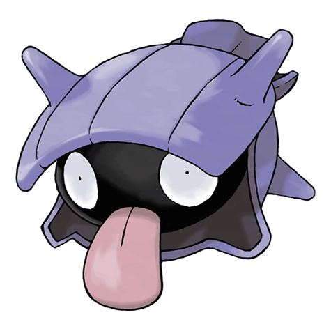

Назад
Шеллдер

Шеллдер — Покемон 1 поколения под номером 90 в Покедекс. Обитает он в регионе Канто и относится к Водяному типу. Ночью Шеллдер использует свой широкий язык для выкапывания песка с морского дна и создания небольшой ямки для последующего сна. Во сне раковина этого Покемона закрывается, но язык по-прежнему остаётся высунутым.
Тип:
Водяной
Эволюция
# 090 Шеллдер
=>
# 091 Клойстер